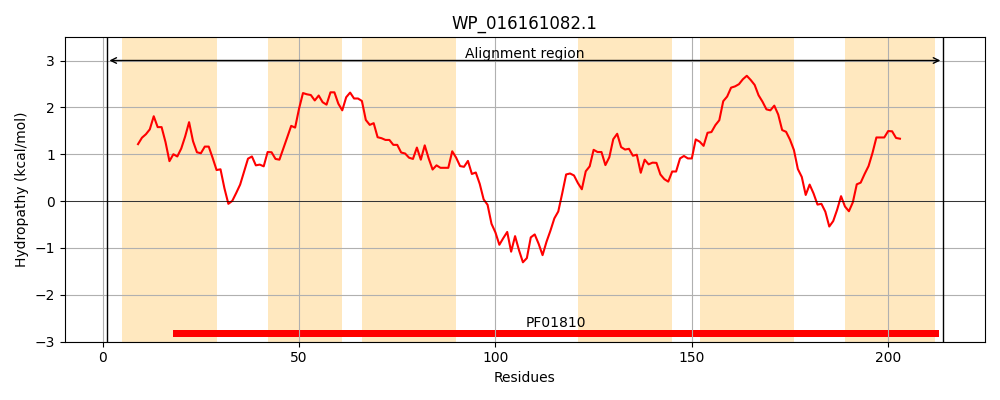
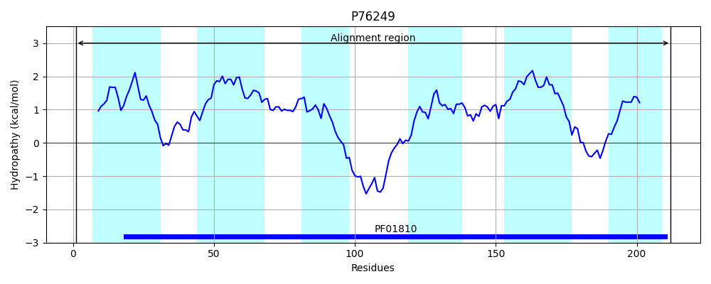
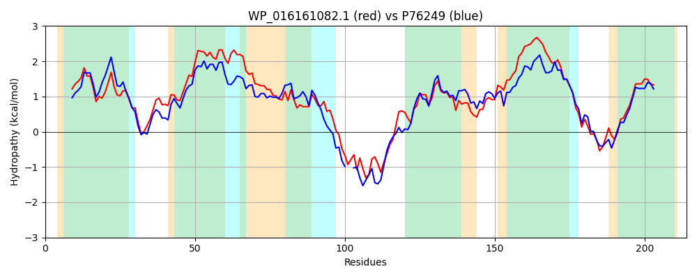

Hit Accession: P76249
Hit TCID: 2.A.76.1.5
Hit Description: gnl|BL_ORD_ID|11453 gnl|TC-DB|P76249|2.A.76.1.5 Hypothetical protein yeaS - Escherichia coli.
Mach Len: 214
e:0.000000
Query TMS Count : 6
Hit TMS Count: 6
TMS-Overlap Score: 5.800000
Predicted Substrates:CHEBI:6276;L-norleucine, CHEBI:4261;D-valine, CHEBI:6271;L-methionine, CHEBI:6321;L-valine, CHEBI:6240;L-histidine, CHEBI:25017;leucine
BLAST Alignment:
Score: 506 , Bit scores: 199 bits, E-value: 5.8e-65, Alignment length: 214, Percentage identity: 43
Query: 1 MFADFGIVNFGTYLLGATLIVLAPGPETMFVIKTSITSGIKRGFAAIFSILMSDVLLVLLAWCGLAAVISSIPALFNAIKYAGAAYLFYLGVQTIRAIFKPTVETSQEKKSSADAKGIIGRGMLVTLLNPKTLLFYISFFAQFINVQAEHSWMAFIILAAVMFAITLVYFGFLVFCGSYLLSRLKGNRRLSTIGNALVGMFFIGFAARLASATS 214
MFA++G++N+ TYL+GA IVL PGP T+FV+K S++SG+K G+ A + + D +L+ LAW G+A +I + P LFN ++Y GA YL YLG + + A K + S+ K I R ++++L NPK +LFY+SFF QFI+V A H+ ++F ILAA + ++ Y FL+ G+++ ++ ++L+ +GN+L+G+ F+GFAARLA+ S
Sbjct: 1 MFAEYGVLNYWTYLVGAIFIVLVPGPNTLFVLKNSVSSGMKGGYLAACGVFIGDAVLMFLAWAGVATLIKTTPILFNIVRYLGAFYLLYLGSKILYATLKG--KNSEAKSDEPQYGAIFKRALILSLTNPKAILFYVSFFVQFIDVNAPHTGISFFILAATLELVSFCYLSFLIISGAFVTQYIRTKKKLAKVGNSLIGLMFVGFAARLATLQS 212 | Protein Hydropathy Plots: |
|---|
|  |  |
Pairwise Alignment-Hydropathy Plot:
|
|---|
|  |